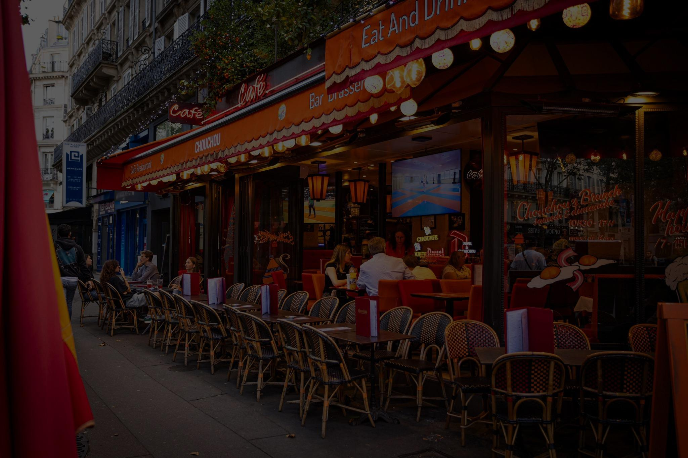
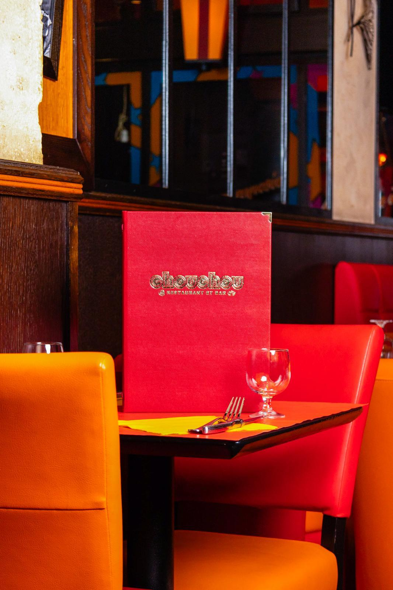
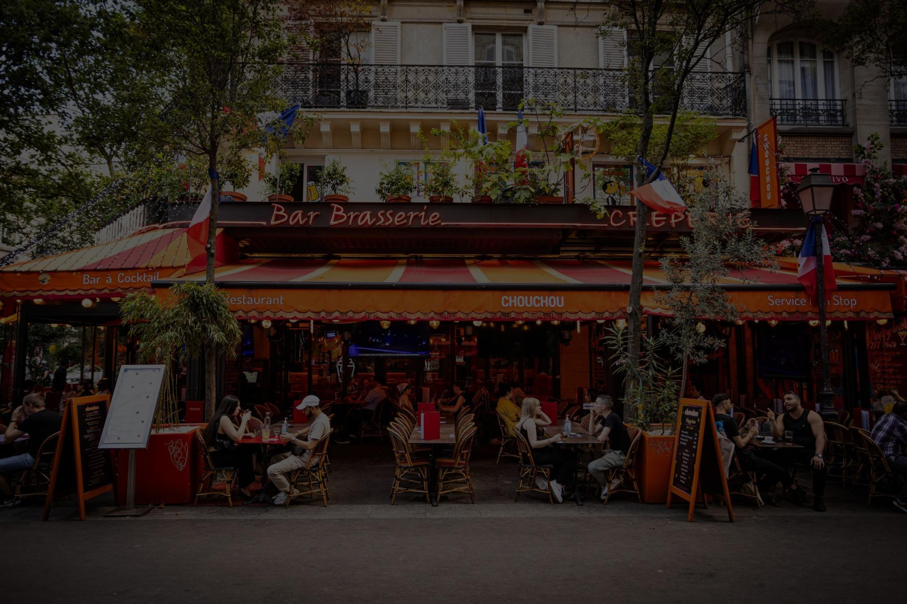

img-002
hero − photo1-d.jpeg · paysage 1.5 · probable plat

img-003
photo3-d.jpeg · paysage 1.5 · probable plat

img-004
hero3.jpg · paysage 2.0 · probable ambiance

img-007
img (5).jpeg · portrait 0.67 · incertain

img-008
img (6).jpeg · portrait 0.67 · incertain

img-009
sculpture_3.jpeg · portrait 0.8 · probable déco

img-010
img (1).jpeg · portrait 0.67 · incertain

img-019
hero5.jpg · paysage 2.0 · probable ambiance

img-020
photo2-d.jpeg · paysage 1.5 · probable plat